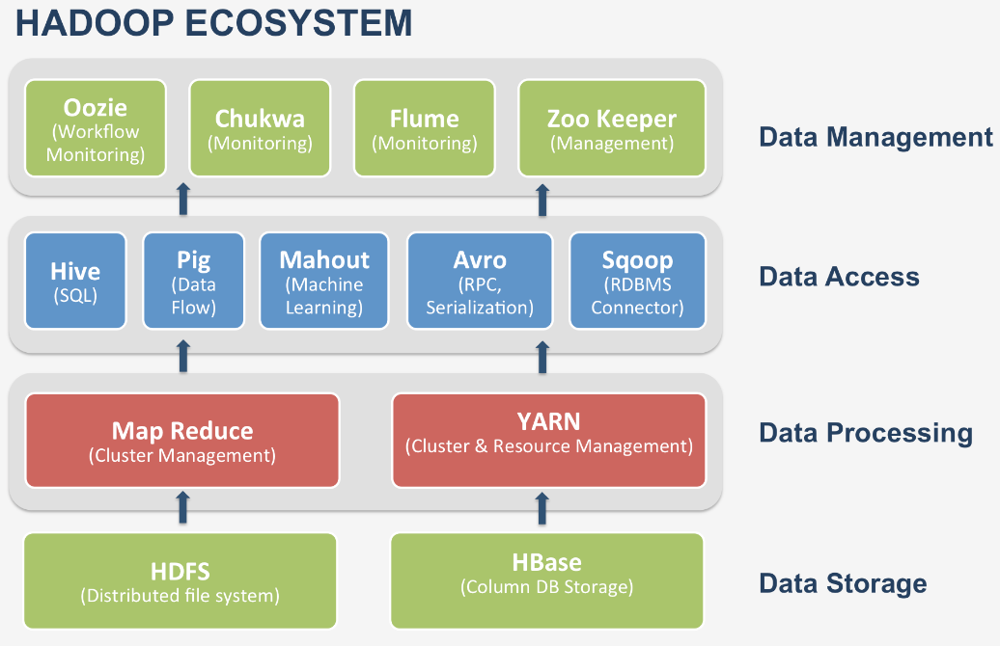
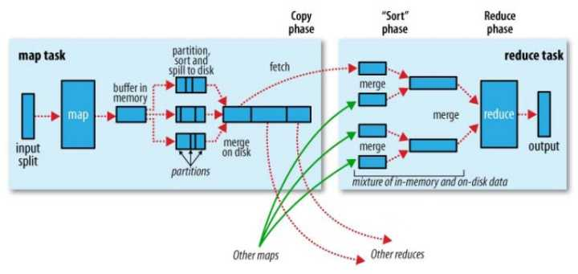
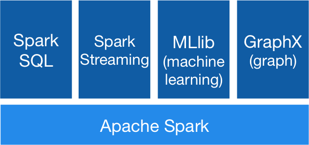
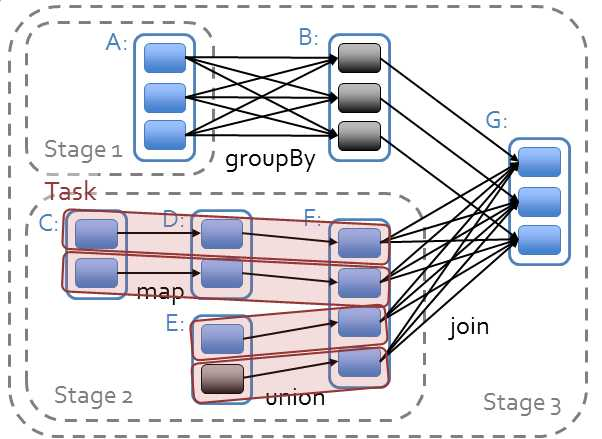
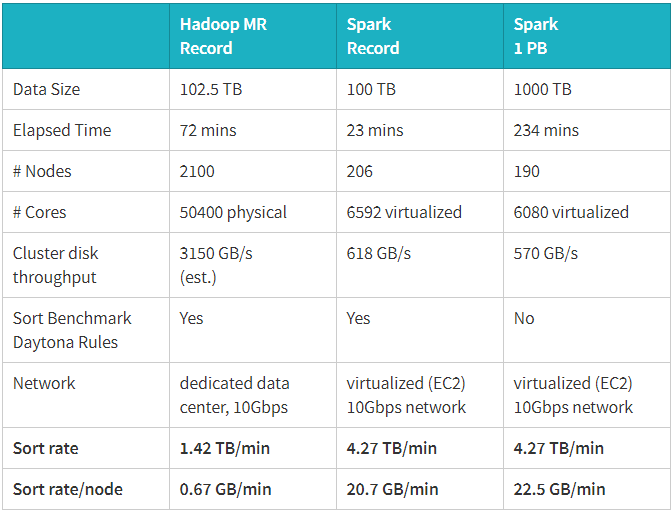

整理Hadoop和Spark的设计理念，组成模块，集群架构，应用场景；
Spark生态齐全，从数据系统Lambda架构的角度，更具优势
Hadoop
Hadoop解决了什么问题？
Hadoop解决了大数据（大到一台计算机无法进行存储，一台计算机无法在要求的时间内完成处理）的可靠存储和计算问题。
Hadoop组件

HDFS（Hadoop Distributed File System ）
Hadoop分布式文件系统HDFS被设计成适合运行在通用硬件(commodity hardware)上的分布式文件系统。
- HDFS是一个高度容错性的系统，适合部署在廉价的机器上。
- HDFS能提供高吞吐量的数据访问，非常适合大规模数据集上的应用。
- HDFS放宽了一部分POSIX约束，来实现流式读取文件系统数据的目的。
- HDFS在最开始是作为Apache Nutch搜索引擎项目的基础架构而开发的。
- HDFS是Apache Hadoop Core项目的一部分。
在由普通PC组成的集群上提供高可靠的文件存储，通过将块保存多个副本的办法解决服务器或硬盘坏掉的问题。

MapReduce
通过简单的Mapper和Reducer的抽象提供一个编程模型，可以在一个由几十台上百台的PC组成的不可靠集群上并发地，分布式地处理大量的数据集，而把并发、分布式（如机器间通信）和故障恢复等计算细节隐藏起来。
而Mapper和Reducer的抽象，又是各种各样的复杂数据处理都可以分解为的基本元素。
这样，复杂的数据处理可以分解为由多个Job（包含一个Mapper和一个Reducer）组成的有向无环图（DAG），然后每个Mapper和Reducer放到Hadoop集群上执行，就可以得出结果。
在MapReduce中，Shuffle是一个非常重要的过程，正是有了看不见的Shuffle过程，才可以使在MapReduce之上写数据处理的开发者完全感知不到分布式和并发的存在。

广义的Shuffle是指图中在Map和Reuce之间的一系列过程。
Hadoop的局限和不足
但是，MapRecue存在以下局限，使用起来比较困难。
- 抽象层次低，需要手工编写代码来完成，使用上难以上手；
- 只提供两个操作，Map和Reduce，表达力欠缺；
- 一个Job只有Map和Reduce两个阶段（Phase），复杂的计算需要大量的Job完成，Job之间的依赖关系是由开发者自己管理的；
- 处理逻辑隐藏在代码细节中，没有整体逻辑；
- 中间结果也放在HDFS文件系统中；
- ReduceTask需要等待所有MapTask都完成后才可以开始；
- 时延高，只适用Batch数据处理，对于交互式数据处理，实时数据处理的支持不够；
- 对于迭代式数据处理性能比较差；
Spark
Apache Spark是一个新兴的大数据处理的引擎，主要特点是提供了一个集群的分布式内存抽象，以支持需要工作集的应用。
这个抽象就是RDD（Resilient Distributed Dataset），RDD就是一个不可变的带分区的记录集合，RDD也是Spark中的编程模型。
Spark组件

RDD（Resilient Distributed Datasets）
Spark提供了RDD上的两类操作，转换（transformation）和动作（action）。
- 转换：用来定义一个新的RDD，包括map, flatMap, filter, union, sample, join, groupByKey, cogroup, ReduceByKey, cros, sortByKey, mapValues等，
- 动作：返回一个结果，包括collect, reduce, count, save, lookupKey。
RDD就是一个分布式的数据集合（Collection），对这个集合的任何操作都可以像函数式编程中操作内存中的集合一样直观、简便，但集合操作的实现确是在后台分解成一系列Task发送到几十台上百台服务器组成的集群上完成的。
RDD（弹性分布式数据集）如何理解？
如果说，
MapReduce是公认的分布式数据处理的低层次抽象，类似逻辑门电路中的与门，或门和非门；
那么Spark的RDD就是分布式大数据处理的高层次抽象，类似逻辑电路中的编码器或译码器等。
DAG（Directed Acyclic Graph）
在Spark中，所有RDD的转换都是是Lazy（惰性）求值的。
RDD的转换操作会生成新的RDD，新的RDD的数据依赖于原来的RDD的数据，每个RDD又包含多个分区。
那么一段程序实际上就构造了一个由相互依赖的多个RDD组成的有向无环图（DAG），并通过在RDD上执行动作将这个有向无环图作为一个Job提交给Spark执行。
Spark对于有向无环图Job进行调度，确定阶段（Stage），分区（Partition），流水线（Pipeline），任务（Task）和缓存（Cache），进行优化，并在Spark集群上运行Job。
RDD之间的依赖分为宽依赖（依赖多个分区）和窄依赖（只依赖一个分区），在确定阶段时，需要根据宽依赖划分阶段。根据分区划分任务。

由RDD组成的有向无环图（DAG）的执行是调度程序将其生成物理计划并进行优化，然后在Spark集群上执行的。
Spark还提供了一个类似于MapReduce的执行引擎，该引擎更多地使用内存，而不是磁盘，得到了更好的执行性能。
故障恢复
Spark支持故障恢复的方式也不同，提供两种方式，
Linage，通过数据的血缘关系，再执行一遍前面的处理；Checkpoint，将数据集存储到持久存储中。
Spark为迭代式数据处理提供更好的支持。每次迭代的数据可以保存在内存中，而不是写入文件。
性能
Spark的性能相比Hadoop有很大提升，2014年10月，Spark完成了一个Daytona Gray类别的Sort Benchmark测试，排序完全是在磁盘上进行的，与Hadoop之前的测试的对比结果如表格所示：

Spark officially sets a new record in large-scale sorting
从表格中可以看出排序100TB的数据（1万亿条数据），Spark只用了Hadoop所用1/10的计算资源，耗时只有Hadoop的1/3。
Spark的一站式解决方案
Spark的优势不仅体现在性能提升上的，Spark框架为批处理（Spark Core），交互式（Spark SQL），流式（Spark Streaming），机器学习（MLlib），图计算（GraphX）提供一个统一的数据处理平台，这相对于使用Hadoop有很大优势。
按照Databricks的连城的说法是One Stack To Rule Them All
特别是在有些情况下，你需要进行一些ETL工作，然后训练一个机器学习的模型，最后进行一些查询，如果是使用Spark，你可以在一段程序中将这三部分的逻辑完成形成一个大的有向无环图（DAG），而且Spark会对大的有向无环图进行整体优化。
例如下面的程序：1
2
3
4
5
6//用Spark SQL 查寻出了一些点
val points = sqlContext.sql("SELECT latitude, longitude FROM historic_tweets")
//用MLlib中的K-means算法使用这些点训练了一个模型
val model = KMeans.train(points, 10)
//用Spark Streaming处理流中的消息，使用了训练好的模型。
sc.twitterStream(...).map(t => (model.closestCenter(t.location), 1)) .reduceByWindow("5s", _ + _)
building-a-unified-data-pipeline-in-apache-spark
Lambda Architecture
Lambda Architecture是一个大数据处理平台的参考模型，如下图所示：
Spark Lambda Architecture
其中包含3层，Batch Layer，Speed Layer和Serving Layer，由于Batch Layer和Speed Layer的数据处理逻辑是一致的，如果用Hadoop作为Batch Layer，而用Storm作为Speed Layer，你需要维护两份使用不同技术的代码。
而Spark可以作为Lambda Architecture一体化的解决方案,大致如下：
- Batch Layer批处理层，
HDFS+Spark Core，将实时的增量数据追加到HDFS中，使用Spark Core批量处理全量数据，生成全量数据的视图； - Speed Layer实时处理层，
Spark Streaming来处理实时的增量数据，以较低的时延生成实时数据的视图； - Serving Layer服务层，
HDFS+Spark SQL（也许还有BlinkDB），存储Batch Layer和Speed Layer输出的视图，提供低时延的即席查询功能，将批量数据的视图与实时数据的视图合并；
总结
Spark解决了Hadoop的哪些问题呢？
- 抽象层次低，需要手工编写代码来完成，使用上难以上手。
=>基于RDD的抽象，实数据处理逻辑的代码非常简短。。 - 只提供两个操作，Map和Reduce，表达力欠缺。
=>提供很多转换和动作，很多基本操作如Join，GroupBy已经在RDD转换和动作中实现。 - 一个Job只有Map和Reduce两个阶段（Phase），复杂的计算需要大量的Job完成，Job之间的依赖关系是由开发者自己管理的。
=>一个Job可以包含RDD的多个转换操作，在调度时可以生成多个阶段（Stage），而且如果多个map操作的RDD的分区不变，是可以放在同一个Task中进行。 - 处理逻辑隐藏在代码细节中，没有整体逻辑
=>在Scala中，通过匿名函数和高阶函数，RDD的转换支持流式API，可以提供处理逻辑的整体视图。代码不包含具体操作的实现细节，逻辑更清晰。 - 中间结果也放在HDFS文件系统中
=>中间结果放在内存中，内存放不下了会写入本地磁盘，而不是HDFS。 - ReduceTask需要等待所有MapTask都完成后才可以开始
=> 分区相同的转换构成流水线放在一个Task中运行，分区不同的转换需要Shuffle，被划分到不同的Stage中，需要等待前面的Stage完成后才可以开始。 - 时延高，只适用Batch数据处理，对于交互式数据处理，实时数据处理的支持不够
=>通过将流拆成小的batch提供Discretized Stream处理流数据。 - 对于迭代式数据处理性能比较差
=>通过在内存中缓存数据，提高迭代式计算的性能。
so，Hadoop MapReduce会被新一代的大数据处理平台替代是技术发展的趋势，而在新一代的大数据处理平台中，Spark目前得到了最广泛的认可和支持。